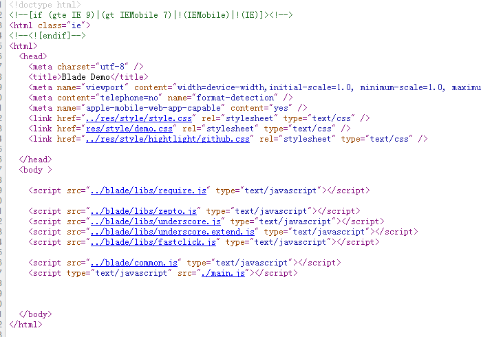
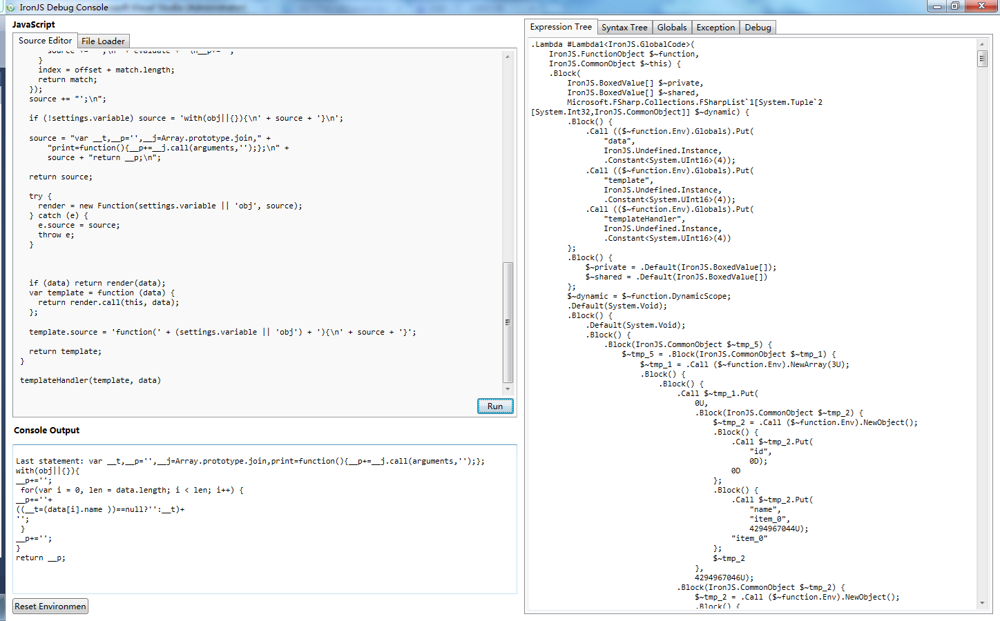
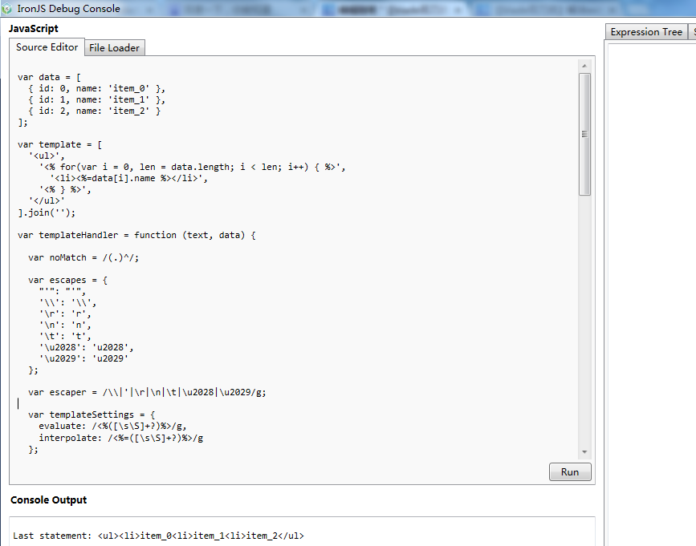

前言

.net解决思路
<script type="text/blade_config"> { url: 'restful/index', template: 'indexTmpt' } </script>
<script id="indexTmpt" type="text/blade_template"> <ul> <% for(var i = 0, len = data.length; i < len; i++) { %> <li><%=data[i].name %></li> <% } %> </ul> </script>
//模拟数据返回 data = [ {id: 0, name: 'item_0'}, {id: 1, name: 'item_1'}, {id: 2, name: 'item_2'} ]
这里期待的webapp处理逻辑：
期待的seo处理逻辑：
为什么不直接服务器吐出完整html？
这个方案的代价是：
.net解析javascript
① 解析页面的config信息，取出url以及template
② 根据url发出请求返回数据，这里由于是局域网应该很快
③ 解析template，根据data生成静态html
④ 其它处理，返回客户端
模拟处理逻辑
我们这里略去url请求一步，假设数据已经返回，否则这里又要写.net程序
var data = [ {id: 0, name: 'item_0'}, {id: 1, name: 'item_1'}, {id: 2, name: 'item_2'} ];
这里的模板字符串为：
var template = [ '<ul>', '<% for(var i = 0, len = data.length; i < len; i++) { %>', '<li><%=data[i].name %></li>', '<% } %>', '</ul>' ].join('');
然后我们要做的就是解析这个模板，生成对应的模板解析函数，这里是调试代码：


var data = [ { id: 0, name: 'item_0' }, { id: 1, name: 'item_1' }, { id: 2, name: 'item_2' } ]; var template = [ '<ul>', '<% for(var i = 0, len = data.length; i < len; i++) { %>', '<li><%=data[i].name %></li>', '<% } %>', '</ul>' ].join(''); var templateHandler = function (text, data) { var noMatch = /(.)^/; var escapes = { "'": "'", '\\': '\\', '\r': 'r', '\n': 'n', '\t': 't', '\u2028': 'u2028', '\u2029': 'u2029' }; var escaper = /\\|'|\r|\n|\t|\u2028|\u2029/g; var templateSettings = { evaluate: /<%([\s\S]+?)%>/g, interpolate: /<%=([\s\S]+?)%>/g, escape: /<%-([\s\S]+?)%>/g }; var render; settings = templateSettings; var matcher = new RegExp([ (settings.escape || noMatch).source, (settings.interpolate || noMatch).source, (settings.evaluate || noMatch).source ].join('|') + '|$', 'g'); var index = 0; var source = "__p+='"; text.replace(matcher, function (match, escape, interpolate, evaluate, offset) { source += text.slice(index, offset) .replace(escaper, function (match) { return '\\' + escapes[match]; }); if (escape) { source += "'+\n((__t=(" + escape + "))==null?'':escape(__t))+\n'"; } if (interpolate) { source += "'+\n((__t=(" + interpolate + "))==null?'':__t)+\n'"; } if (evaluate) { source += "';\n" + evaluate + "\n__p+='"; } index = offset + match.length; return match; }); source += "';\n"; if (!settings.variable) source = 'with(obj||{}){\n' + source + '}\n'; source = "var __t,__p='',__j=Array.prototype.join," + "print=function(){__p+=__j.call(arguments,'');};\n" + source + "return __p;\n"; return source; try { render = new Function(settings.variable || 'obj', source); } catch (e) { e.source = source; throw e; } if (data) return render(data); var template = function (data) { return render.call(this, data); }; template.source = 'function(' + (settings.variable || 'obj') + '){\n' + source + '}'; return template; } templateHandler(template, data)
首次调试爆了很多错误，而且服务器端的调试比较费力，错了只能靠经验去猜测

这里返回的是需要构造成函数的字符串，但是我们看到我们的“ul”等标签被吃掉了！！！
var __t,__p='',__j=Array.prototype.join,print=function(){__p+=__j.call(arguments,'');}; with(obj||{}){ __p+=''; for(var i = 0, len = data.length; i < len; i++) { __p+=''+ ((__t=(data[i].name ))==null?'':__t)+ ''; } __p+=''; } return __p;
我们这里一旦调用就抛了一个错误，这个时候一般是模板或者传入数据出错了，可惜的是他是对其中一段语法不可解析！这里从侧面反映出一个问题：
该方法若是模板出错会导致程序无法运行，如果是node的话很可能就crash了！
PS:这里由于CLR4解析javascript的时候字符串的replace遇到正则时有问题，在此逗留3小时，这里把我搞惨了，定位就很久最后还得重写模板解析！！！
1 var data = [ 2 { id: 0, name: 'item_0' }, 3 { id: 1, name: 'item_1' }, 4 { id: 2, name: 'item_2' } 5 ]; 6 7 var template = [ 8 '<ul>', 9 '<% for(var i = 0, len = data.length; i < len; i++) { %>', 10 '<li><%=data[i].name %></li>', 11 '<% } %>', 12 '</ul>' 13 ].join(''); 14 15 var templateHandler = function (text, data) { 16 17 var noMatch = /(.)^/; 18 19 var escapes = { 20 "'": "'", 21 '\\': '\\', 22 '\r': 'r', 23 '\n': 'n', 24 '\t': 't', 25 '\u2028': 'u2028', 26 '\u2029': 'u2029' 27 }; 28 29 var escaper = /\\|'|\r|\n|\t|\u2028|\u2029/g; 30 31 var templateSettings = { 32 evaluate: /<%([\s\S]+?)%>/g, 33 interpolate: /<%=([\s\S]+?)%>/g 34 }; 35 36 var render; 37 var settings = templateSettings; 38 39 var matcher = new RegExp([ 40 (settings.interpolate || noMatch).source, 41 (settings.evaluate || noMatch).source 42 ].join('|') + '|$', 'g'); 43 44 var index = 0; 45 var source = "__p+='"; 46 var _text = text; 47 48 var _treg; 49 50 while (1) { 51 52 var matcher = new RegExp([ 53 (settings.interpolate || noMatch).source, 54 (settings.evaluate || noMatch).source 55 ].join('|') + '|$', 'g'); 56 57 (function () { 58 _treg = matcher.exec(_text) 59 })(); 60 61 var t_str = _treg[0]; 62 var t_len = t_str.length; 63 var t_index = _treg.index; 64 65 source += _text.slice(index, t_index).replace(escaper, function (match) { return '\\' + escapes[match]; }); 66 _text = _text.slice(t_index + t_len); 67 68 if (_treg[2]) { 69 source += "';\n" + _treg[2] + "\n__p+='"; 70 } 71 if (_treg[1]) { 72 source += "'+\n" + _treg[1] + "\n'"; 73 } 74 if (_text.length == 0) break; 75 76 } 77 source += "';\n"; 78 79 if (!settings.variable) source = 'with(obj||{}){\n' + source + '}\n'; 80 81 source = "var __t,__p='',__j=Array.prototype.join," + 82 "print=function(){__p+=__j.call(arguments,'');};\n" + 83 source + "return __p;\n"; 84 85 try { 86 render = new Function(settings.variable || 'obj', source); 87 } catch (e) { 88 e.source = source; 89 throw e; 90 } 91 92 //return source; 93 94 if (data) return render(data); 95 var template = function (data) { 96 return render.call(this, data); 97 }; 98 99 template.source = 'function(' + (settings.variable || 'obj') + '){\n' + source + '}'; 100 101 return template; 102 } 103 104 templateHandler(template, { data: data })

我这里使用生命在调试啊！！！因为服务器解析javascript时候，很多东西都不支持，感觉有点回到了c++！！！
小结
这里字符串解析成功，我们这部分也就告一段落了，本身.net方案也不是这次的重点，这里提供基本思路各位自己去看看吧，总之调试很坑
下期预告
对javascript来说，nodeJS自然是亲爹，我们这次的主要方案其实是基于nodeJS的，这里的期望：
① 用户请求过来时候首先判断是否为网络爬虫
② 网络爬虫访问seo/index.html，用户访问webapp/index.html
当然，我们做demo时候不会这么麻烦，我们直接为其添加一个seo=true的标志位在url即可
nodeJS实现SEO的方案重点依旧在首屏渲染，我们这里首先基于blade做两个页面，然后以此扩展seo的方案
当然此块内容有点小复杂，加之，小钗对nodeJS停留在学习阶段，这块需要学习，而且最近有些其它事情扰心，暂时便搁置了
这块的内容可能与RapidJS（clouda前身）有关，有兴趣的同学可以先去看看
文中有误请您指出，若您对webapp的seo有什么好的想法请留言